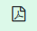
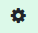

Instruccions d'ús del simulador de producció fotovoltaica individual
Instruccions d'ús del simulador de producció fotovoltaica individual
Pas 1 - Localització:
Hem d'identificar la coordenades latitud, longitud on es realitzarà la instal·lació, per la qual cosa hi ha diverses opcions:
a) Mitjançant el desplaçament al mapa.
b) Identificant una zona o adreça exacta al camp <Localització>
Un cop es visualitza el lloc exacte, donar un doble-click amb el ratolí que permetrà completar el camp Long-Lat.
En aquest moment l'aplicació aquesta llista per iniciar el càlcul sol·licitant a PVGIS que determini l'orientació i la inclinació òptima.
Si ho
saps, pots indicar un segon punt que informi l'orientació est-oest de
les plaques, per això et pots ajudar de la vista satèl·lit.
També, si ho saps pots introduir al camp <Inclinació> l'angle
respecte al terra.
Un cop completades aquestes dades pots donar al botó “Següent”
Pas 2 – Dades de consum:
Selecció del tipus de tarifa (2.0TD o 3.0TD) que s'utilitzarà a la simulació. Verificar els preus. Es proposen inicialment els de SOM Energia. Si no són els correctes, s'actualitzaran als valors que siguin adequats abans de fer el càlcul..
· Si tens fitxer CSV amb consums horaris obtinguts de la teva empresa distribuïdora, selecciona l'opció (Fitxer de consum individual) i carrega'l mitjançant el botó <Escollir fitxer>
· Si no el tens fes servir l'opció Perfil tipus REE i introdueix el consum anual de la finca.
Veureu
un mapa pintat amb el vostre perfil de consum.
Un cop assolit aquest punt pots donar al botó “Següent”
Pas 3:
S'observaran els resultats de la primera proposta a les pestanyes <Balanç Energia>, <Balanç econòmic> i <Gràfics> havent utilitzat els valors econòmics amb les tarifes definides al pas 2.
Pas 4:
A la
pestanya <Balanç econòmic> es completaran les dades
corresponents a les possibles subvencions que pugui gaudir la
instal·lació tenint en compte que la subvenció UE està limitada que la
producció anual dels panells no sigui superior al 80% del consum
anual.
En el cas de lIBI es pot indicar el valor abonat i, segons el municipi
de què es tracti, quin és el percentatge que se subvenciona i per
quants anys.
Pas 5:
Es poden fer diversos cicles de proves canviant la configuració de la instal·lació <Panels> o <Potència per panell>. Aquest canvi es pot fer des de la pestanya <Balanç energia> o des del gràfic d'Alternatives a la pestanya <Balanç Econòmic>. L'aplicació farà els càlculs corresponents de manera automàtica.
Pas 6:
A la
pestanya <Paràmetres>, que s'activa des de la icona d'eines, es
poden actualitzar diversos paràmetres utilitzats al càlcul. Els canvis
realitzats en aquesta pestanya es reflectiran en el proper càlcul.
Des del menú situat a la part superior dreta es poden seleccionar les
opcions següents, d'esquerra a dreta:

 |
Formulari de contacte des d'on ens podeu enviar els vostres comentaris, així com informar de possibles errors o millores que considereu oportunes. |
|  |
Genera un informe en PDF de la simulació activa. |
|  |
Eines per canviar algun dels paràmetres utilitzats per laplicació. |
 |
Obre aquest document. |
| Habilita un panell a la dreta de la pantalla amb una guia explicativa de la pestanya on et trobis en aquell moment. |